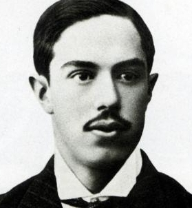
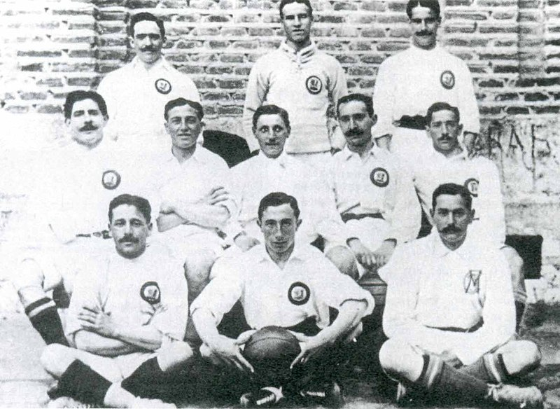

Tras los primeros protoclubes de foot-ball surgidos en Madrid a finales del siglo XIX, un grupo de jóvenes y antiguos integrantes de la Institución Libre de Enseñanza (ILE) formaron en 1897 un equipo que resultó ser el antecesor de la entidad madridista, la Sociedad de Foot-Ball, la primera surgida en la región para la exclusiva práctica de un deporte llegado de Inglaterra y que, por diversas circunstancias, terminara sufriendo una escisión en octubre del año 1900. Las insuficientes y poco correctas crónicas de la época no permiten esclarecer con certeza lo que ocurrió hasta 1902. Existen dos hipótesis al respecto. La primera indica que se dividió en dos clubes, Nueva Sociedad de Foot-Ball y (Sociedad) Sky Foot-Ball, que se fusionarían en 1901 para dar origen a la (Sociedad) Madrid Foot Ball Club. La otra hipótesis y posiblemente la más probable según las crónicas, dice que acabaría en 1901 con una reestructuración de esta Nueva Sociedad surgida en noviembre de 1900 para denominarse (Sociedad) Madrid Foot-Ball Club tras unírsele algunos integrantes de la Sociedad primera. Se puede pues afirmar que en 1901 adoptó el nombre que le acompañó en adelante, sin poder verificar su fundación en ese año o en uno anterior, y su legalización concluyó en 1902 como fecha que figura en sus registros. Las fuentes citan a Julián Palacios como primer presidente de la Nueva Sociedad, y después del Madrid F.C. fuera o no el mismo club.
Julián Palacios, presidente desde 1900 que llevó al club a su legalización en 1902.
Apenas unas cuantas decenas de socios formaban la entidad debido a la poca extensión del fútbol en el país, deporte que no poseía aún recintos propios o debidamente conformados para su práctica. Por ello los entusiastas équipiers se repartían por diferentes descampados y zonas de la ciudad como el Campo del Retiro,heredado del Sky Foot-Ball.71 El primer partido del equipo del que se tiene constancia data del 6 de octubre de 1901 en la citada localización.
La conclusión del certamen nacional llevó a un crecimiento institucional, iniciado con incorporaciones de jugadores a una plantilla entre la que destacaba el conocimiento del juego de su integrante británico Arthur Johnson. Su implicación con el desarrollo del foot-ball madrileño y español, y la falta de una estamento federativo nacional, hizo que la Union des Sociétés Françaises de Sports Athlétiques (USFSA) le citase como representante del país al primer Congreso de Foot-Ball Association del 21 de mayo de 1904. En él fue, junto a otras seis federaciones, miembro fundador de la Federación Internacional de Fútbol Asociación (en francés, Fédération Internationale de Football Association - FIFA).
Cumplido el primer lustro de siglo germinaron en la capital numerosos equipos de fútbol que acrecentaron la competencia, motivo por el que el club absorbió al Moderno Foot-Ball Club, a la Association Sportive Amicale, y en 1907 al Moncloa Foot-Ball Club para cubrir las bajas ante la dimisión de algunos de sus integrantes para fundar el Club Español de Madrid y el Athletic Club (Sucursal de Madrid). Este último fue un equipo filial en Madrid del club bilbaíno del Athletic Club,8889 su primer rival reconocido, que derivó en el actual Atlético de Madrid. Mientras, Carlos Padrós fue nombrado presidente sustituyendo a su hermano Juan y concentró sus tareas como dirigente en el crecimiento social a nivel de club, y federativo a nivel regional.
Fotografia de los vencedores del Campeonato de España de 1906.